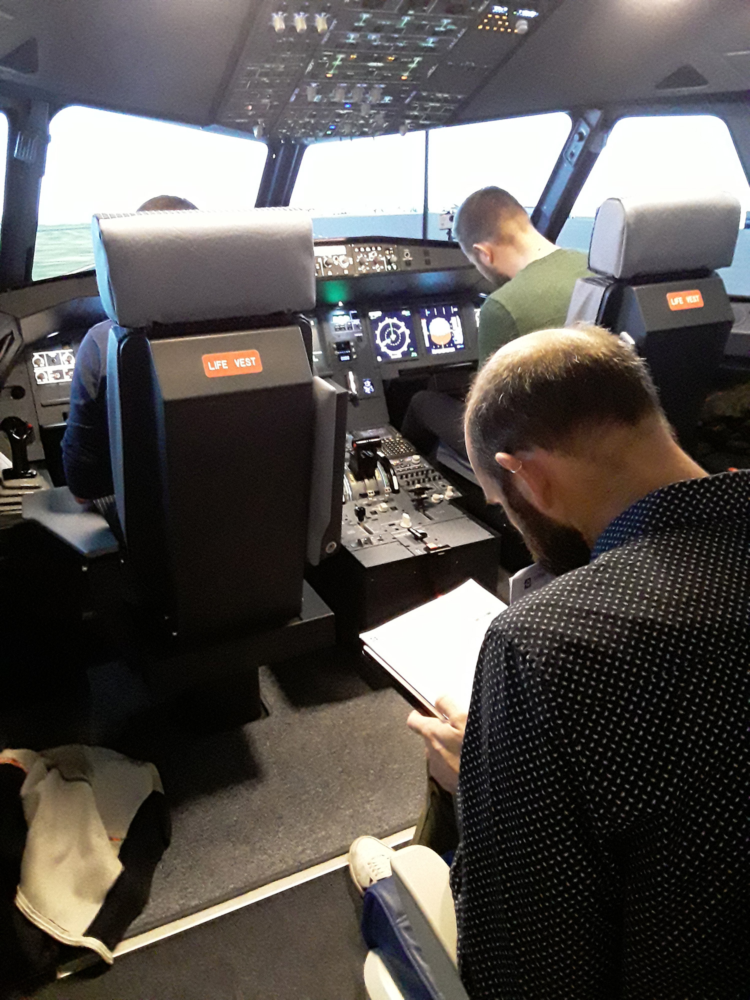
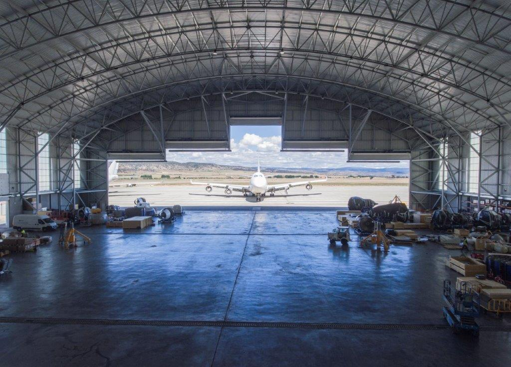
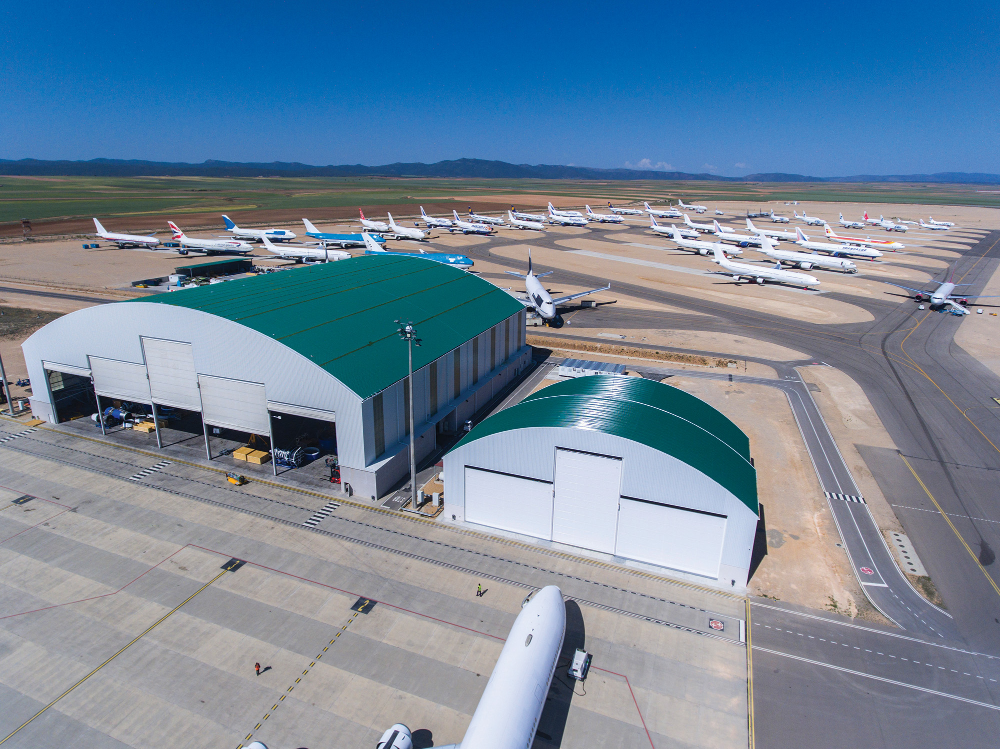
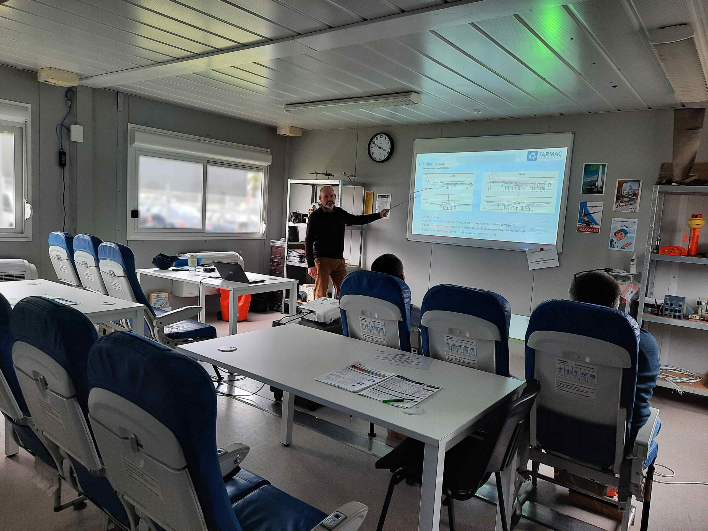

Notre centre est heureux de vous accueillir dans un environnement de maintenance aéronautique réel, avec près de 280 avions répartis sur nos sites en France et en Espagne.
Nos activités couvrent un large éventail de formations, allant de la formation à la gestion des dommages causés par les corps étrangers (FOD) à la qualification de type, en incluant la formation « Mise en marche moteur » sur simulateur et la formation « Culture et technologies aéronautiques », permettant au personnel de soutien d'acquérir une meilleure compréhension du monde de l'aéronautique.

Soucieux de la qualité de nos formations, nous accordons une attention particulière à l'écoute de nos clients et proposons des formations personnalisées afin de répondre au mieux à leurs besoins.
Les formations peuvent être dispensées dans les locaux de Tarmac Aerosave et/ou dans les locaux du client, en fonction du nombre de participants et du planning.
Pour toute information, veuillez contacter training@tarmacaerosave.aero.
Notre catalogue comprend plus de 45 références réparties en deux grandes catégories, pour répondre aux besoins de tous les acteurs de la maintenance aéronautique :
- Formations Part 147 : qualifications de type et différences moteurs sur les familles Airbus (A320, A330, A340) et Boeing, incluant les modules généralités et les parties pratiques,
- Formations hors Part 147 : formations réglementaires Part 145 (MOE, sensibilisation MOE/SGS, recyclage réglementaire, CDCCL & sécurité réservoirs carburant) et formations complémentaires (FOD, culture et technologies aéronautiques, mise en marche moteur sur simulateur...).
Tarmac Aerosave Formation est certifié Qualiopi depuis juin 2022, gage de la qualité de nos prestations. Cette certification honore les pratiques de formation dispensées dans nos centres et confirme notre engagement pour la sécurité de nos partenaires et de nos équipes.
Notre centre est également agréé organisme de formation à la maintenance par l'OSAC, au titre de la Partie 147 du règlement (UE) n°1321/2014, sous la référence FR.147.0050, ce qui nous permet de dispenser les formations et examens de qualification de type sur les familles Airbus et Boeing.
Accès à notre centre
Tarmac Aerosave
L'Aérodrome Tarbes-Lourdes-Pyrénées
65380 Azereix, France
Tél. : +33 (0)5 62 42 89 90
En voiture :
- Prendre la sortie 12 de l'A64 / La Pyrénéenne,
- Au rond-point, tourner à gauche sur la N21,
- Continuer sur la N21 pendant 9,5 km,
- Tourner à droite sur la D93 en direction de l'aéroport Tarbes-Lourdes,
- Au rond-point, tourner à droite en direction de Tarmac Aerosave (panneau rouge),
- Tarmac Aerosave se trouve alors sur votre gauche.
En avion :
- 5 min de l'aéroport de Tarbes-Lourdes-Pyrénées (vols quotidiens vers Paris-Orly),
- 30 min de l'aéroport de Pau-Pyrénées (vols quotidiens vers Paris-CDG),
- 1h30 de l'aéroport de Toulouse-Blagnac.
Transferts depuis/vers l'aéroport :
- Location de voiture : des comptoirs sont disponibles dans tous les aéroports à proximité de nos sites.
- Taxi : nous bénéficions de tarifs préférentiels auprès de compagnies de taxi locales. Contactez votre référent formation pour organiser votre transfert.